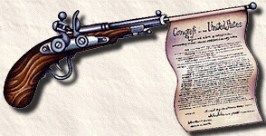

Militias. Distrust of government. Abuse of power. The right to bear arms. Not a day passed without a passionate article or an editorial on the role of guns in American life. The year was 1775. More than 200 years later, the seminal debate undertaken as John Adams, Thomas Jefferson and James Madison formulated the laws of the land still echoes. Is the Michigan Militia an aberration or the Constitution in action? Is Gordon Liddy a dangerous demagogue or a devoted patriot? What exactly did the founding fathers mean when they penned the Second Amendment? No sampler can do justice to the debate, but we hope the following scrapbook helps shed light on the relation between arms and liberty. Our sources were Alexander Hamilton, Madison and John Jay's Federalist, "That Every Man Be Armed: The Evolution of a Constitutional Right," by Stephen Halbrook, "The Road to the Bill of Rights," by Craig Smith, and a collection of quotes compiled by Charles Curley.
From "A Journal of the Times," calling the citizens of Boston to arm themselves in response to British abuses of power, 1769:
"Instances of the licentious and outrageous behavior of the military conservators of the peace still multiply upon us, some of which are of such nature and have been carried to so great lengths as must serve fully to evince that a late vote of this town, calling upon the inhabitants to provide themselves with arms for their defense, was a measure as prudent as it was legal. It is a natural right which the people have reserved to themselves, confirmed by the [English] Bill of Rights, to keep arms for their own defense, and as Mr. Blackstone observes, it is to be made use of when the sanctions of society and law are found insufficient to restrain the violence of oppression."
George Mason's Fairfax County Militia Plan, 1775:
"And we do each of us, for ourselves respectively, promise and engage to keep a good firelock in proper order, & to furnish ourselves as soon as possible with, & always keep by us, one pound of gunpowder, four pounds of lead, one dozen gunflints, & a pair of bullet moulds, with a cartouch box, or powder horn, and bag for balls."
Patrick Henry, 1775:
"They tell us that we are weak -- unable to cope with so formidable an adversary. But when shall we be stronger? Will it be when we are totally disarmed, and when a British guard shall be stationed in every house? Three million people, armed in the holy cause of liberty, are invincible by any force which our enemy can send against us."
Thomas Paine, writing to religious pacifists in 1775:
"The supposed quietude of a good man allures the ruffian; while on the other hand, arms like laws discourage and keep the invader and the plunderer in awe, and preserve order in the world as well as property. The balance of power is the scale of peace. The same balance would be preserved were all the world destitute of arms, for all would be alike; but since some will not, others dare not lay them aside. Horrid mischief would ensue were one half the world deprived of the use of them; the weak would become a prey to the strong."
Samuel Adams:
"Among the natural rights of the colonists are these: first, a right to life, secondly to liberty, thirdly to property; together with the right to defend them in the best manner they can."
John Adams:
"Arms in the hands of the citizens may be used at individual discretion for the defense of the country, the overthrow of tyranny or private self-defense."
Thomas Jefferson:
"The strongest reason for the people to retain the right to keep and bear arms is, as a last resort, to protect themselves against tyranny in government."
Thomas Jefferson, in an early draft of the Virginia constitution:
"No free man shall ever be debarred the use of arms in his own lands."
Patrick Henry:
"Guard with jealous attention the public liberty. Suspect everyone who approaches that jewel. Unfortunately, nothing will preserve it but downright force. Whenever you give up that force, you are ruined. The great object is that every man be armed. Everyone who is able may have a gun."
Thomas Jefferson's advice to his 15-year-old nephew:
"A strong body makes the mind strong. As to the species of exercise, I advise the gun. While this gives moderate exercise to the body, it gives boldness, enterprise and independence to the mind. Games played with the ball and others of that nature are too violent for the body and stamp no character on the mind. Let your gun therefore be the constant companion of your walks."
Noah Webster, 1787:
"Before a standing army can rule, the people must be disarmed, as they are in almost every kingdom in Europe. The supreme power in America cannot enforce unjust laws by the sword, because the whole of the people are armed, and constitute a force superior to any band of regular troops."
James Madison, "The Influence of the State and Federal Governments Compared," 46 Federalist New York Packet, January 29, 1788:
"Besides the advantage of being armed, which the Americans possess over the people of almost every other nation, the existence of subordinate governments, to which the people are attached, and by which the militia officers are appointed, forms a barrier against the enterprises of ambition more insurmountable than any which a simple government of any form can admit of. Notwithstanding the military establishments in the several kingdoms of Europe, which are carried as far as the public resources will bear, the governments are afraid to trust the people with arms. And it is not certain that with this aid alone they would not be able to shake off their yokes. But were the people to possess the additional advantages of local governments chosen by themselves, that could collect the national will and direct the national force, and of officers appointed out of the militia, by these governments and attached both to them and to the militia, it may be affirmed with the greatest assurance that the throne of every tyranny in Europe would be speedily overturned in spite of the legions which surround it."
Alexander Hamilton, "Concerning the Militia," 29 Federalist Daily Advertiser, January 10, 1788:
"There is something so far-fetched and so extravagant in the idea of danger to liberty from the militia that one is at a loss whether to treat it with gravity or raillery. Where, in the name of common sense, are our fears to end if we may not trust our sons, our brothers, our neighbors, our fellow citizens? What shadow of danger can there be from men who are daily mingling with the rest of their countrymen and who participate with them in the same feelings, sentiments, habits and interests? What reasonable cause of apprehension can be inferred from a power in the Union to prescribe regulations for the militia, and to command its services when necessary, while the particular states are to have the sole and exclusive appointment of the officers? If it were possible seriously to indulge a jealousy of the militia upon any conceivable establishment under the federal government, the circumstance of the officers being in the appointment of the states ought at once to extinguish it. There can be no doubt that this circumstance will always secure to them a preponderating infiuence over the militia."
Richard Henry Lee, Additional Letters from the Federal Farmer, 1788:
"Militias, when properly formed, are in fact the people themselves and include all men capable of bearing arms. To preserve liberty it is essential that the whole body of the people always possess arms and be taught alike, especially when young, how to use them."
Tench Coxe, writing as "the Pennsylvanian" in the Philadelphia Federal Gazette, 1788:
"The power of the sword, say the minority of Pennsylvania, is in the hands of Congress. My friends and countrymen, it is not so, for the powers of the sword are in the hands of the yeomanry of America from 16 to 60. The militia of these free commonwealths, entitled and accustomed to their arms, when compared with any possible army, must be tremendous and irresistible. Who are the militia? Are they not ourselves? Is it feared, then, that we shall turn our arms each man against his own bosom? Congress has no power to disarm the militia. Their swords, and every other terrible implement of the soldier, are the birthright of an American. The unlimited power of the sword is not in the hands of either the federal or state governments, but where I trust in God it will ever remain, in the hands of the people."
Connecticut gun code of 1650:
"All persons shall bear arms, and every male person shall have in continual readiness a good muskitt or other gunn, fitt for service."
Article 3 of the West Virginia state constitution:
"A person has the right to keep and bear arms for the defense of self, family, home and state, and for lawful hunting and recreational use."
Virginia Declaration of Rights 13 (June 12, 1776), drafted by George Mason:
"That a well-regulated militia, composed of the body of the people, trained to arms, is the proper, natural and safe defense of a free state; that standing armies, in time of peace, should be avoided as dangerous to liberty; and that, in all cases, the military should be under strict subordination to, and governed by, the civil power."
A proposed amendment to the Federal Constitution, as passed by the Pennsylvania legislature:
"That the people have a right to bear arms for the defense of themselves and their own states or the United States, or for the purpose of killing game; and no law shall be passed for disarming the people or any of them, unless for crimes committed, or real danger of public injury from individuals."
An amendment to the Constitution, proposed by James Madison:
"The right of the people to keep and bear arms shall not be infringed, a well-armed and well-regulated militia being the best security of a free country; but no person religiously scrupulous of bearing arms shall be compelled to render military service in person."
The Second Amendment, as passed September 25, 1789:
"A well regulated Militia, being necessary to the security of a free State, the right of the people to keep and bear Arms, shall not be infringed."
George Washington's address to the second session of the First U.S. Congress:
"Firearms stand next in importance to the Constitution itself. They are the American people's liberty, teeth and keystone under independence. The church, the plow, the prairie wagon and citizens' firearms are indelibly related. From the hour the pilgrims landed to the present day, events, occurrences and tendencies prove that, to ensure peace, security and happiness, the rifle and pistol are equally indispensable. Every corner of this land knows firearms, and more than 99 and 99/100 percent of them by their silence indicate that they are in safe and sane hands. The very atmosphere of firearms anywhere and everywhere restrains evil influence. They deserve a place of honor with all that's good. When firearms go, all goes. We need them every hour."